1 Core Model Proposal #359: Hydrogen and transportation technology update
1.1 Transportation
- Natural Gas Vehicles(NGV)
- Light-duty vehicles
- 지역별로 LDV의 사이즈를 4개씩 구분하였고, 각각의 배터리 용량(kwh poer vehicle) 제시
- BEV battery pack costs는 2020 BNEF EV Outlook에서 가져옴
- cost mark-up??
- Fuel cell stack costs는 NREL, 2020 Transportation Annual Technology Baseline에서 가져옴
1.2 transportation_UCD_CORE_CurPol_Korea_Dawoon
- region : South Korea
- supplysector :
- 항공 :
- aviation_intl
- 화물 :
- freight
- freight_road
- 여객 :
- pass_road
- pass_road_LDV
- pass_road_LDV_4W
- 해운 :
- shipping_intl
- 항공 :
- energy_final_demand
- 항공:
- aviation_intl
- 화물:
- freight
- 여객:
- pass
- 해운:
- shipping_intl
- 항공:
- supplysector :
- gcam-7의 transportation_UCD_CORE.xml과 비교해보니, supplysector, energy-final-demand의 구성 name은 동일함
- The most common failure to run GCAM when double clicking the run-gcam executable script typically relate to Java.
- model running 테스트 ->
All model periods solved correctly.

- Model run 결과는 exe - log - main_log.txt 에서 확인 가능
- output - queries
- ModelInterface - run-model-interface.bat
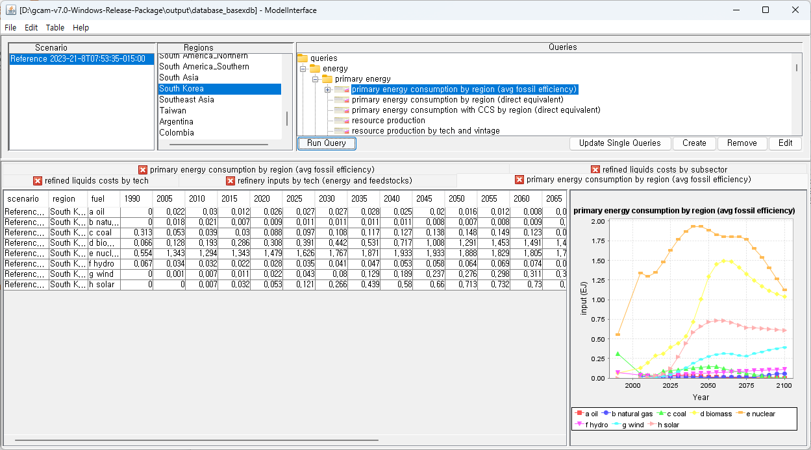 ### transportation
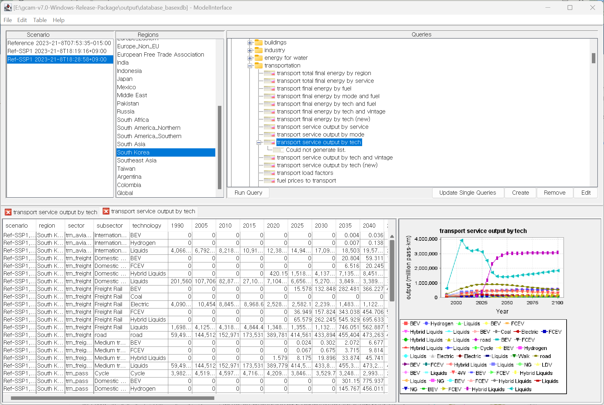
2 2023-08-21 meeting with prof.Jeon
- GCAM7에는 trn_freight_road(트럭)에 hybrid 추가됨. Dawoon 파일에는 hybrid 없음
- Created new xml configuration by adding lines
for <Configuration> <Value name = "transport">../input/gcamdata/xml/transportation_UCD_SSP1.xml</Value>
for stop year <Value name="stop-year">2050</Value> -> DOESN’T WORK!!!
Saved as
configuration_transportation_SSP1.xmlfor backupAgain, saved it as
configuration.xlmcauserun-batct.catin exe folder takeconfiguration.xlm(not configuration_transporation_SSP1.xml) as input filerun model

for checking model results, go to Modelinterface folder, and click
run-model-interface.batand File - Open -DB Open

- configuration.xml 파일에
vale name = solver밑에 새로운value name = transport추가
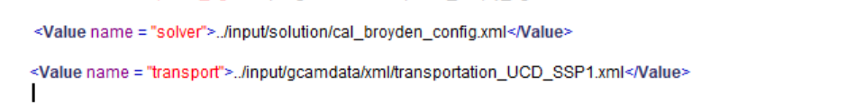
3 2023-08-22
3.0.1 git bash or tortoiseGit?
- Instead of using
tortoiseGit, I hope to usegit bash. Runningtortoise gittakes quite a long time when targeted.xmlfiles are heavy. For using, CLI(Command line interface) needs to be learned. But, steep learning curve :(
3.0.2 git diff
Show changes between commits, commit and working tree, etc
- Tried to use
git diffto see difference between versions in a file.moved
transportation_UCD_CORE.xmlinto a test foldermodified a
speedin 2020 from 450 to 500 for make a difference. and then saved it.
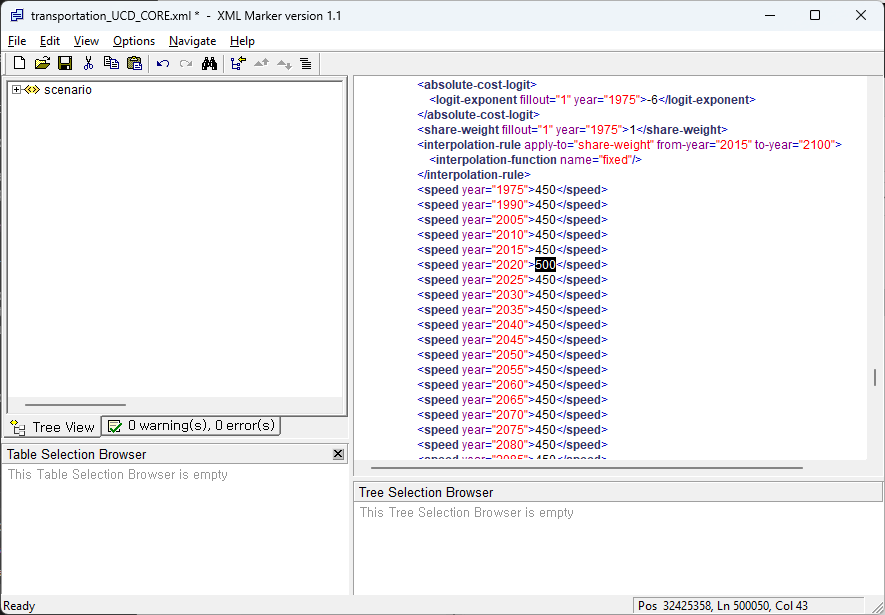
- Result. We can find a difference without add or commit. just typing
git diffgives the difference.
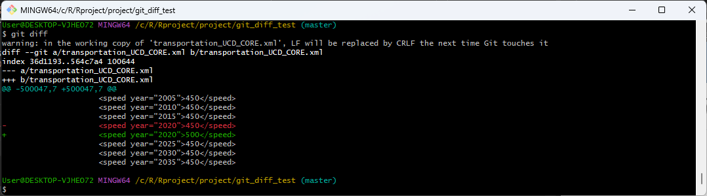
4.Modified speed in 2030, 2035 and typed git diff again. Same as 2.

- Commit
git commitand track my log usinggit log

- what’s next? reset? revert?
- DAC file
4 2023-08-29
- 수송분야 transport.configuration_transportation_dawoon.xml
4.1 Representation of H2 in GCAM
- Tried to make a flow chart of hydrogen in GCAM using
mermaid
flowchart TD Electricity --> H2centralproduction Electricity --> H2wholesaledispensing Electricity --> H2industrial Wind --> H2centralproduction Solar --> H2centralproduction Coal --> H2centralproduction Nuclear --> H2centralproduction Gas --> H2centralproduction Gas --> H2wholesaledispensing H2centralproduction --> H2deliverytrack H2centralproduction --> H2pipeline H2deliverytrack --> H2wholesaledelivery H2deliverytrack --> H2wholesaledispensing H2pipeline --> H2wholesaledelivery H2pipeline --> H2wholesaledispensing H2wholesaledelivery --> H2rentaldelivery H2wholesaledelivery --> H2industrial H2rentaldelivery --> CommercialBuildings H2rentaldelivery --> ResidentialBuildings H2industrial --> AmmoniaProduction H2industrial --> IronandSteelProduction H2industrial --> IndustrialEnergyUse H2wholesaledispensing --> AgriculturalMachinery H2wholesaledispensing --> ConstruntionEquipment H2wholesaledispensing --> MiningEquipment H2wholesaledispensing --> H2rentaldispensing H2rentaldispensing --> HeavyDutyTrucks H2rentaldispensing --> LightDutyVehicles H2rentaldispensing --> AirTransport H2rentaldispensing --> RailTransport H2rentaldispensing --> ShipTransport
5 2023-08-31
5.1 To do
Comparing
dac_ssp2.xmlanddac_ssp_x3.xml. Maybe _x3 means that the value has increased by 3 times??transportation_UCD_CORE.xmlis default in configuration file in GCAM7.transportation_UCD_CORE_CurPol_KOREA_Dawoon.xml,transportation_UCD_CORE_NetZero_KOREA_Dawoon.xmlin GCAM-KAIST2.0. RunKOREAfiles in GCAM7.
5.2 Failure
Run a model with
transportation_UCD_CORE.xml(default file in GCAM7.0) -> Of course, it worked!Run a model with
transportation_UCD_CORE_CurPol_KOREA_Dawoon.xmlfrom GCAM-KAIST2.0 -> ERROR! error messages are as follows.
- Unknown tag: loadFactor encountered while processing period
- Market info object cannot be returned because market H2 enduse in XX does not exit
- Called for price of non-existant market H2 enduse in region XX
Tried to find a way to see the differences in different XML files in R. But couldn’t. What is the best way to see the structure of XML? and easy way to do
diff?Tried to run
library(rgcam)but… failed. need to explore more.
5.3 Success
Let’s check the difference btw
dac_ssp2.xmlanddap_ssp2_x3.xmlscenarios.Based on the scenarios described below, ran a model to see the different results caused by two dac scenarios.
dac_ssp2anddac_ssp2_x3
../input/Korea/1p5-incr-UC-kor-LUC-Kwangnam.xml ../input/Korea/GHG_link_Kor.xml
../input/Korea/FFI-const-row-deeper-decarb-2050-1p5-6000-Linear.xml
../input/Korea/PCT_CO2_LUC_link_p10_row.xml
Discovery of
library(gcamaextractor)gcamextractoris R package used to extract and process GCAM data and manipulate into standardized tables. gcamextractor converts GCAM outputs into commonly used units as well as aggregates across different classes and sectors for easy use in plots, maps and tables. See Details.
- line charts
Code
library(readxl)
library(tidyverse)
library(gghighlight)
dac_data<- read_excel('./KAIST_IAM_GROUP/results.xlsx')
data_tidy<- dac_data %>%
select(-scenario, -region) %>%
relocate(type, query) %>%
pivot_longer(-c('type', 'query', 'sector'), names_to ="year", values_to = "MTC") %>%
mutate( year = as.numeric(year))
data_tidy %>%
filter(query == "sequestration") %>%
ggplot(aes(x= year, y = MTC, group = sector, color = type))+
geom_line()+
facet_wrap(~sector)+
labs(title= "Comparison between scenario dap_ssp2 and dap_ssp_x3")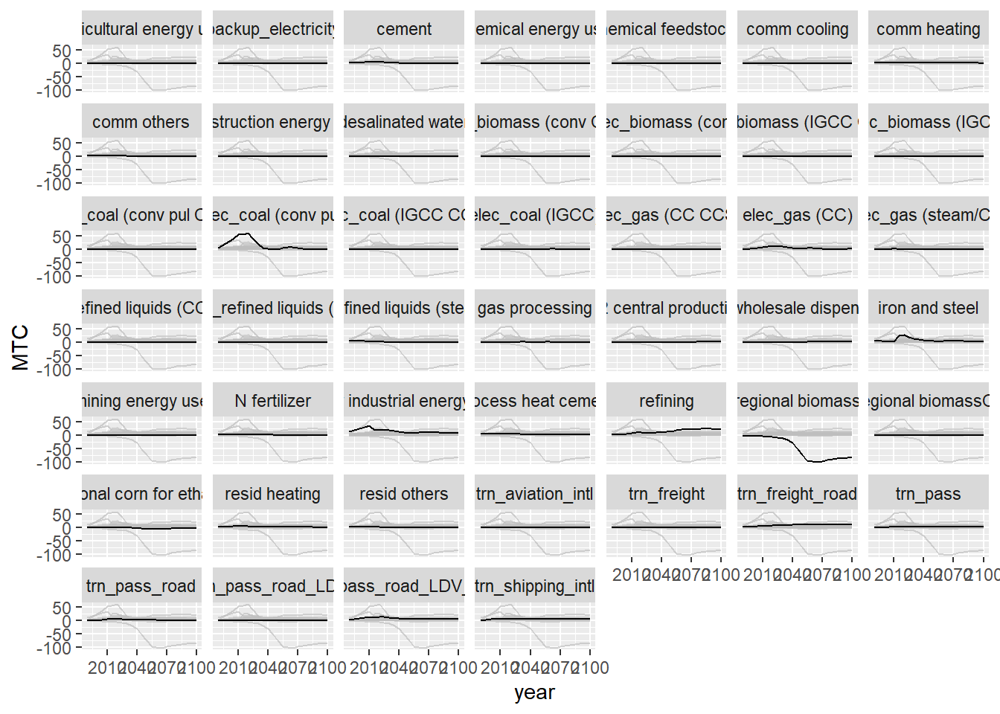
Code
data_tidy %>%
filter(query == "emission") %>%
ggplot(aes(x= year, y = MTC, group = sector, color = type))+
geom_line()+
facet_wrap(~type)+
labs(title= "Comparison between scenario dap_ssp2 and dap_ssp_x3")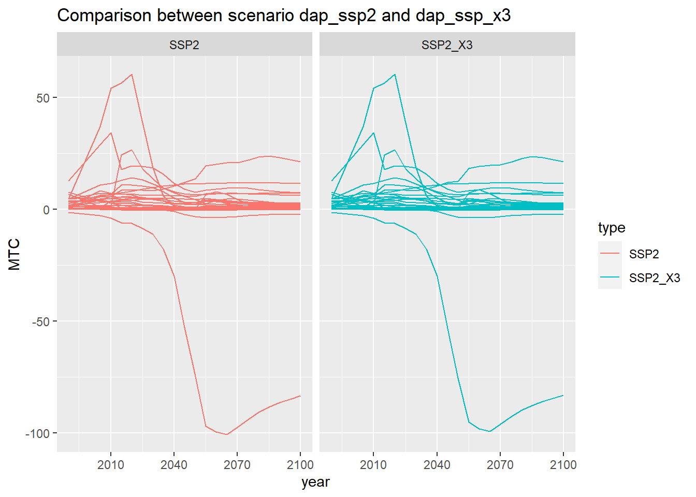
5.3.1 Results
I used
library(gcamextractor)to ease data manipulation burden and make the differences in result more visible.Results from two scenarios showed no big differences (the results are almost identical).
Figures below show the results, and it seems like there is only one scenario not two.
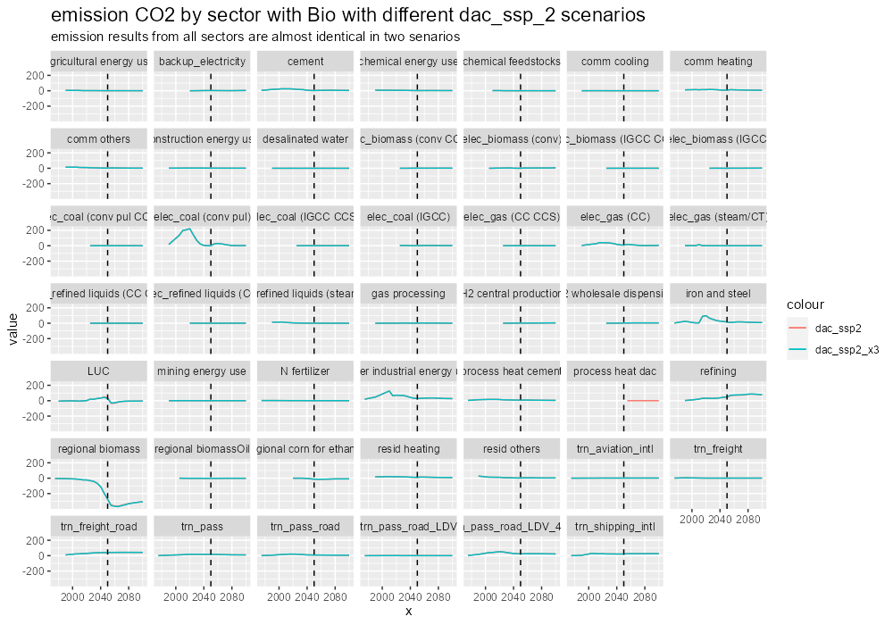
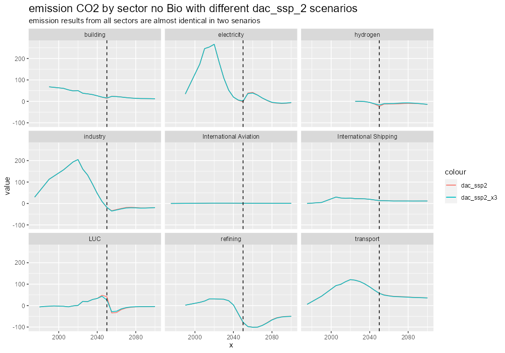
- Make a chart using
library(rchart)
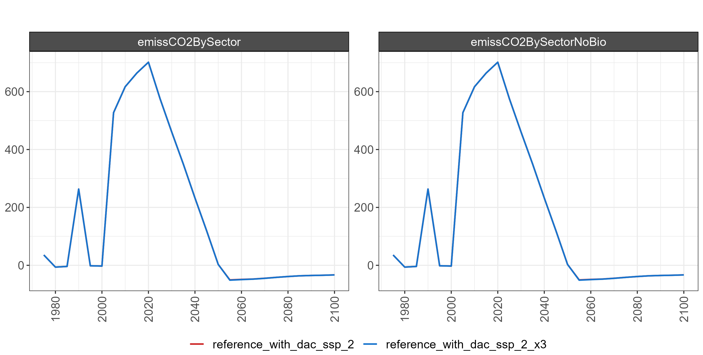
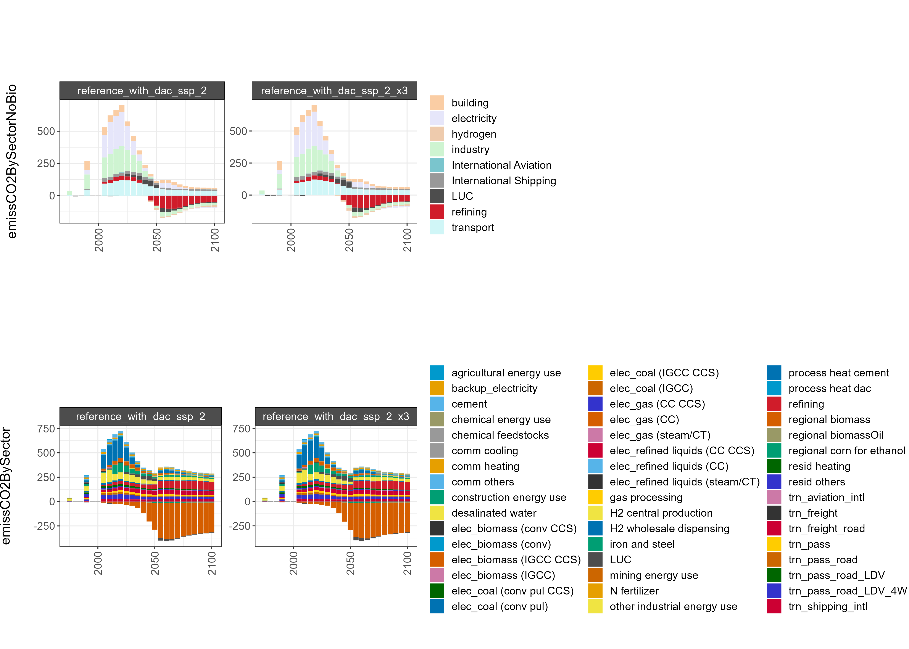
5.4 Needs to be done
How to see the structure of XML files in R? Using
XML,XML2libraries orrgacmlibrary works?What are the parameters we need to focus on? in dac scenario analysis I just selected the
emissCO2BySectorandemissCO2BySectorNoBio. What else should I consider? ->NoBio is in which we are intersted.How to immigrate transportation scenario from GCAM-KAIST2.0 to GCAM7?
6 2023-09-05 Meeting
DAC의 경우는 CO2 sequestration parameter 중요
광남에게 transportation 시나리오에 대해 물어보기. 무얼 바꿨고 어떻게 작업했는지. quick seminar 가능?
In KAIST2.0 광남,
energy-final-demand name ="chemical"왜??GCAM-KAIST2.0 광남시나리오 VS GCAM7 기본 TRANSPORTATION 시나리오 비교.
DAC의 경우는 CO2 sequestration parameter 중요.
github jgcri or GCAM 에 DAC 작동안된다고 문의하기.
시나리오가 아주 많을 떄
library(gcamextractor)사용하면 좋고, 현재는 ModelInterface에서 봐도 충분하다.어디를 봐야할 지 모를 때 look at input by sector, output bt sector.
7 2023-09-07 meeting
(DAC) DAC 기술인 high DAC? 이런 애들은 다른 나라에서는 나타남, Japan, Thailand에서도. 한국에서만 안나타나는거 같음. 결과가 잘 나타나는 국가를 하나 택해서 이름만 바꿔보기. 예를 들어. Japan <-> Korea
(Diff)
1p5-incr-uc-KOR-LUC-Kwangnam.xmlvsFFI-const-row-deeper-decarb-2050-1p5-6000-Linear.xml전자에는ghgpolicy name = GHG, 후자에는ghgpolicy name = CO2로 차이가 있음. -> 이로 인한 문제?(Diff)
GHG_link_kor.xmlvsPCT_CO2_LUC_link_p10_row.xml차이도 있음.(Transportation) ModelInterface에서
transport final energy by tech and fuel과transport service output by tech결과 제시 필요!! GCAM-KAIST2.0 vs GCAM7.0(Transportation)
CurPol_Dawoon.xml과transportation_UCD_CORE.xml의 차이. UCD_CORE에는<stub-technology name="Hybrid Liquids">가 있는데, 전자에는 없음.Hybrid Liquids가 없어서 GCAM7에서 시나리오 돌릴 떄 오류??
7.1 dac_ssp2랑 dac_ssp_x3 ModelInterface에서 확인하기
- Check dac_ssp2 & dac_ssp2_x3 scenarios results of USA using Modelinterface in GCAM
- Selected parameter :
CO2 emission by techandCO2 sequestration by tech - Drag and drop the resuls in excels
- See the differences using R
- Differences can be seen in
airCO2,CO2 removal,process heat dac, -> dac scenario works in USA - /KAIST_IAM_GROUP
dac_scenario_analysis.R에서 확인 가능
- Region : USA, Query: CO2 emissions by sector
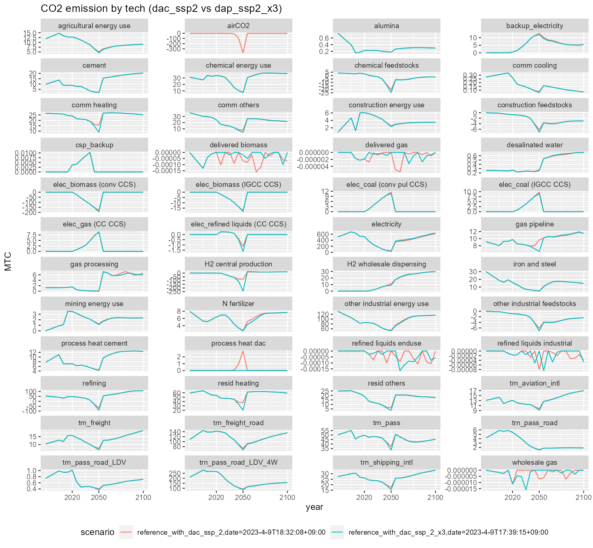
- Region : USA, Query: CO2 sequestration by sector
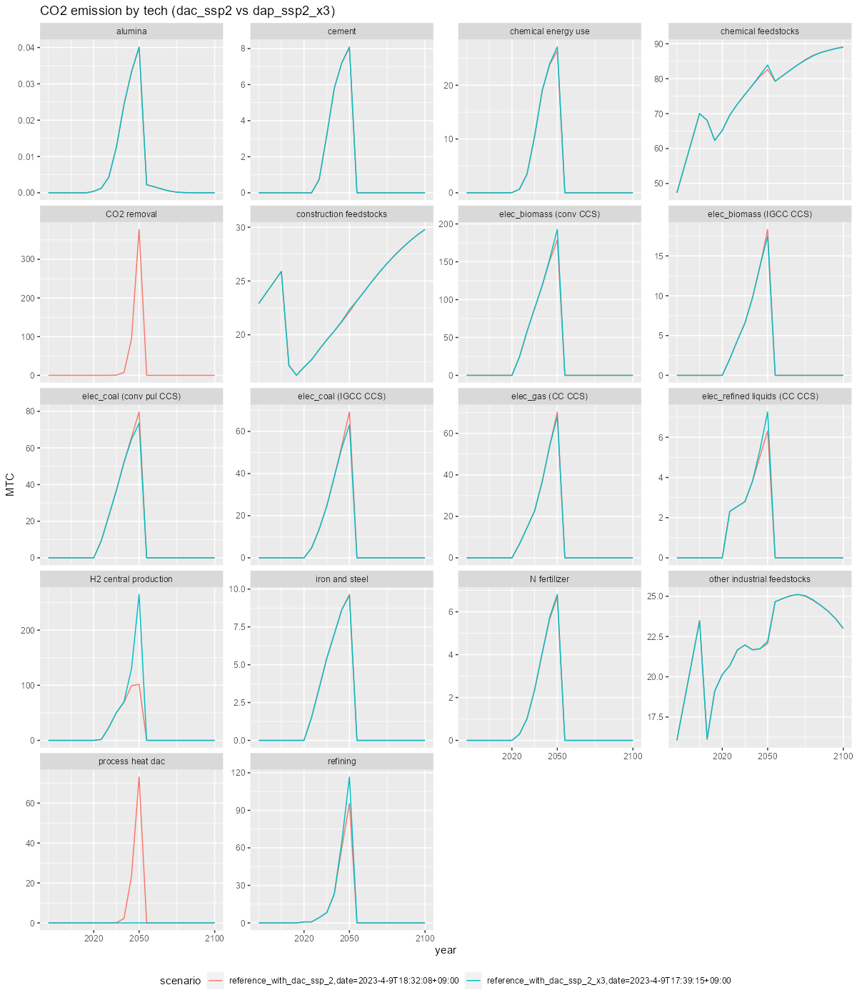
7.2 Automation of graph reporting with R library(gcamextractor)
- Using
library(gcamextractor), query data can be imported as dataset in R and saved in excel files. -> Details can be found inTemplate.R - User guide for gcamextractor here.
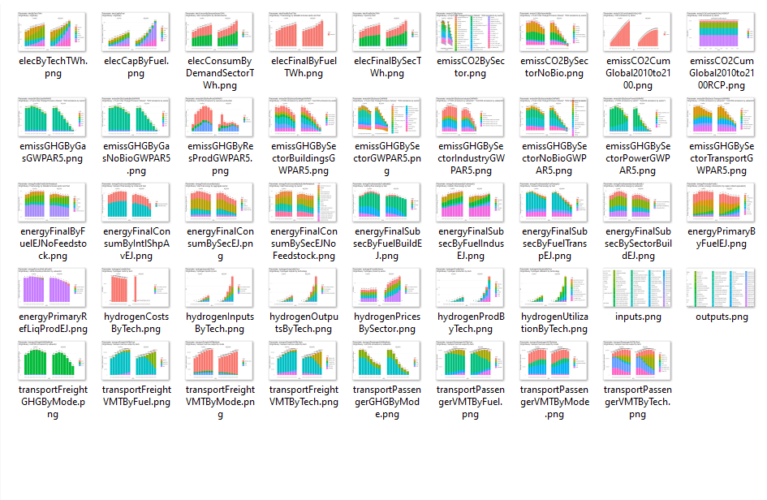
7.3 2023-09-12 회의
에너지통계연보 수치를, R 템플릿 결과에 추가해서 볼 수 있게
dac 시나리오 나라 바꿔서 돌려보기 e.g., Korea <-> USA